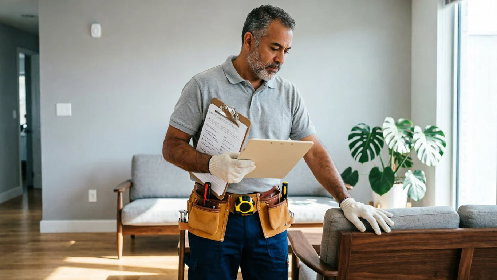
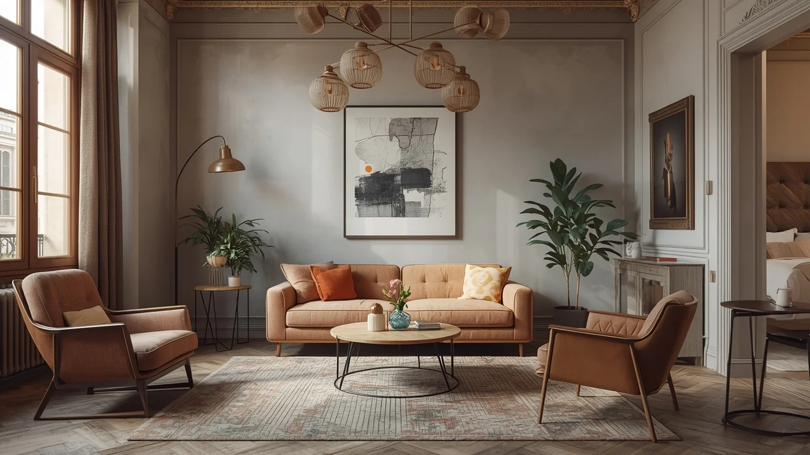
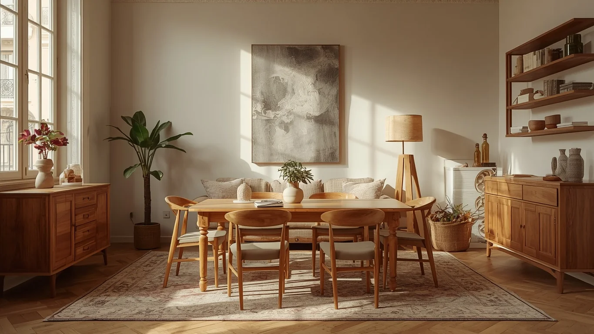
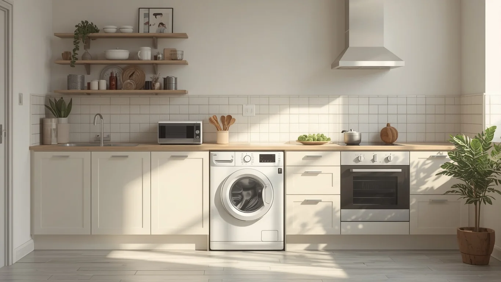
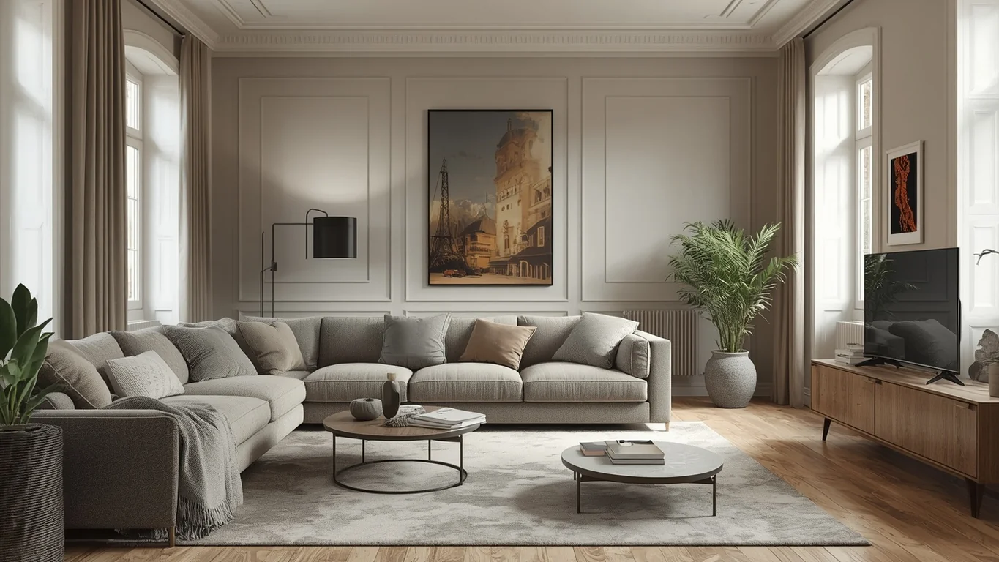
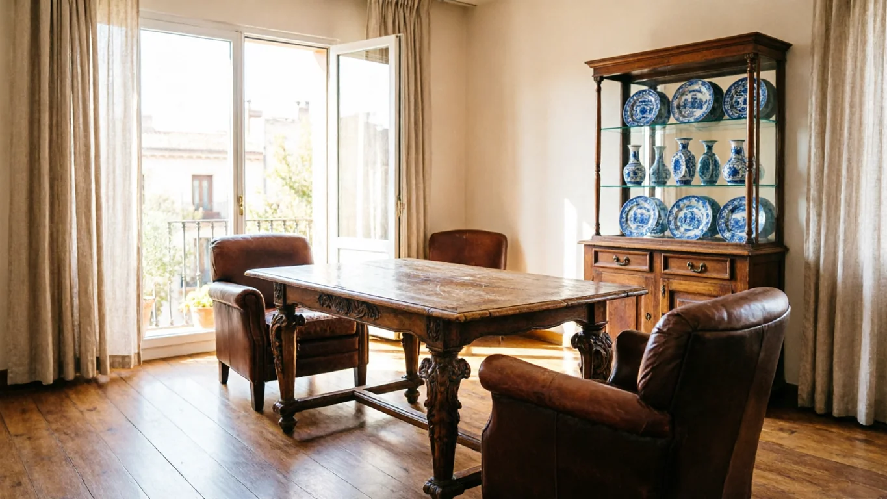
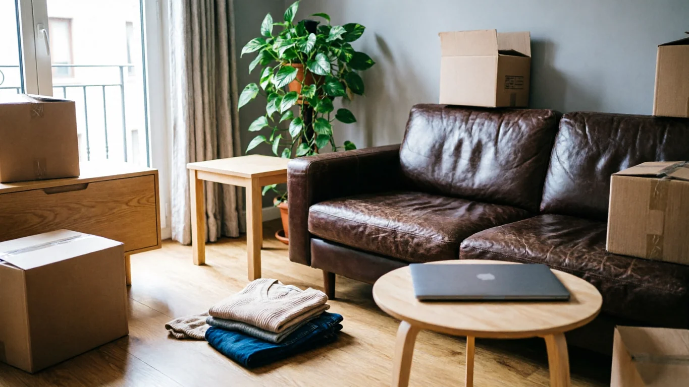

En resum: quan és possible el buidatge gratis?
- Quan el valor de revenda dels mobles i objectes cobreix el cost del servei
- Pisos amb mobles de fusta massissa, antiguitats, disseny vintage o electrodomèstics funcionals de menys de 8–10 anys
- Pisos complets: com més objectes recuperables hi hagi, més fàcil que els valors es compensin
- Amb bon accés (ascensor o planta baixa) i a la zona de Barcelona o àrea metropolitana
- Sempre requereix visita de valoració presencial abans de confirmar

La lògica del buidatge gratis: com funciona realment
Quan busqueu «buidatge gratis Barcelona», probablement us pregunteu si és un truc de màrqueting o alguna cosa real. La resposta és que és real, però té una lògica econòmica concreta que cal entendre per saber si s'aplica al vostre cas.
Una empresa de buidatge té costos operatius: mà d'obra, vehicle, temps, gestió de residus en gestor autoritzat per l'ARC. Aquests costos existeixen independentment de si el pis té mobles bons o dolents. El que canvia és si els objectes del pis tenen valor de mercat suficient per compensar-los.
L'EQUACIÓ DEL BUIDATGE GRATIS
Si el valor supera el cost, la diferència pot tornar-se al propietari o descomptar-se del pressupost
Els objectes recuperables tenen dues destinacions: revenda directa (segona mà, Wallapop, rastres, antiquaris) o donació a entitats benèfiques com Càritas, Creu Roja o entitats locals de Barcelona. El valor del que es pot revendre és el que es descompta del cost del servei.
La regla d'or del sector és unànime: no llenceu ni regaleu res abans de la valoració. Hi ha propietaris que es desfan de "trastos" abans de trucar a l'empresa, sense saber que aquests trastos —una calaixera antiga, uns llums dels 70, uns quadres amb marc— eren precisament els que haurien cobert el cost del servei. El que sembla sense valor pot tenir-ne per al mercat de segona mà.

Quins objectes tenen valor real de mercat a Barcelona
El mercat de segona mà a Barcelona (Wallapop té més de 139.000 anuncis actius de mobles només a la ciutat) té demanda real per a certs tipus d'objectes. Aquests són els que poden fer que el buidatge sigui gratuït o molt econòmic:
Mobles de fusta massissa
Armaris, aparadors, calaixeres, taules o llits de fusta massissa (roure, noguera, cirerer, faig). Especialment si estan en bon estat i sense danys estructurals.
Mercat: 80–800€/peçaDisseny vintage o mid-century
Mobles dels anys 50–70 amb línies netes, tapisseria original o en bon estat. La demanda de disseny d'època ha crescut significativament a Barcelona en els darrers anys.
Mercat: 150–1.500€/peçaVaixelles i plateria completes
Jocs de vaixella de porcellana sense peces trencades, coberteria de plata o acer de qualitat, cristalleria completa de marques. La paraula clau és «complet»: un joc parcial val molt menys.
Mercat: 50–400€/jocQuadres i art
Quadres amb signatura, gravats, litografies, escultures. Fins i tot marcs elaborats sols tenen mercat. Una signatura reconeixible pot canviar radicalment el valor total del buidatge.
Variable: pot ser molt altElectrodomèstics que funcionen
Frigorífics, rentadores, rentavaixelles, forns de marques de qualitat (Siemens, Bosch, AEG, Miele, Zanussi) amb menys de 8–10 anys i que estiguin en funcionament. Els que no funcionen es gestionen com a RAEE.
Mercat: 80–400€/unitatLlums i il·luminació
Llums de peu de disseny, aplics de vidre, aranyes, llums de tauleta de marques o d'època. A Barcelona hi ha col·leccionistes i botigues especialitzades amb demanda constant.
Mercat: 30–500€/peçaLlibres i col·leccions
Col·leccions completes, llibres tècnics especialitzats, enciclopèdies en bon estat, llibres d'art o primeres edicions. Els llibres genèrics de butxaca no tenen mercat, però els tècnics o d'art sí.
Mercat: variableAntiguitats i col·leccionisme
Rellotges de paret, figures de porcellana, joguines antigues, instruments musicals, roba vintage d'època. Qualsevol objecte amb més de 50–60 anys i en bon estat pot sorprendre en valoració.
Mercat: molt variableParament de cuina de qualitat
Bateries de cuina d'acer inoxidable de marques, utensilis de ferro colat (Le Creuset, Staub), ganiveteria de marques. El parament plàstic o de baixa qualitat no té valor.
Mercat: 50–300€/lot

Quins objectes NO tenen valor i no contribueixen al descompte
Per ser completament honest, hi ha tipus de contingut que pràcticament no tenen sortida al mercat de segona mà i que generen cost de gestió de residus en lloc d'ingressos:
IKEA bàsic, Conforama, Leroy Merlin: si estan desmuntats o amb danys, el seu valor és pràcticament zero. El cost de portar-los al punt net supera qualsevol possible venda.
Per normativa sanitària, els matalassos usats no es poden revendre. Només es poden donar a persones en situació de necessitat o gestionar-se com a residu. Sempre generen cost.
Un frigorífic de 2010 que no refreda bé no té sortida. La seva gestió com a RAEE (residu d'aparell elèctric) té cost a la deixalleria. Si funciona però té molt ús, també baixa molt el seu valor.
Només es pot donar a Càritas o altres entitats si està en perfecte estat. La roba molt usada o de moda passada no té mercat ni com a donació organitzada. Només aporta volum i pes.
Un moble de fusta massissa que ha estat en un local humit durant anys, encara que tingui forma d'antiguitat, no té valor si el dany és estructural. La humitat destrueix el valor de revenda.
Arxivadors, capses de cartró, paper, benches genèrics de metall. Només tenen valor en grans quantitats per a ferralleria (metall) o en molt bon estat per a negocis concrets.

Els tres escenaris possibles després de la valoració
Buidatge completament gratuït
El valor dels objectes recuperables iguala o supera el cost del servei. El propietari no paga res. Si el valor supera el cost, la diferència pot tornar-se.
Cost per al propietari: 0 €
Exemple: pis de 90 m² amb mobles d'època a Sarrià, quadres originals i electrodomèstics de gamma alta de 5 anys.
Buidatge amb descompte parcial
El valor dels objectes cobreix una part del cost, però no tot. El propietari paga la diferència. Estalvia respecte al preu estàndard, però no és gratuït.
Cost per al propietari: preu reduït
Exemple: pis de 75 m² a Gràcia amb alguns mobles valuosos però també molt material sense valor.
Buidatge a preu estàndard
El contingut del pis no aporta valor de mercat suficient per a cap descompte. El propietari paga el preu habitual amb pressupost tancat.
Cost per al propietari: preu estàndard
Exemple: pis amb mobles bàsics danyats, electrodomèstics vells o contingut sense valor de revenda.
Algunes empreses usen el terme «buidatge gratis» amb asterisc i condicions que el converteixen en qualsevol altra cosa. Per saber si la proposta és honesta, exigiu sempre pressupost escrit amb desglossament del valor d'objectes i el cost del servei. Si l'empresa no pot o no vol separar aquests dos números, desconfieu. El buidatge gratis real es documenta i es justifica.

Com s'avalua i es gestiona un buidatge potencialment gratis
-
1
Primer: no retireu ni regaleu res
Abans de trucar a ningú, deixeu el pis exactament com està. Cada objecte retirat abans de la valoració redueix el potencial de descompte. Molts propietaris buiden armaris de «trastos» abans de la visita i perden exactament els objectes que haurien compensat el cost.
Regla fonamental del sector -
2
Contacte amb fotos prèvies (opcional però útil)
Abans de la visita presencial, podeu enviar fotos per WhatsApp dels mobles i objectes més visibles. Una empresa amb experiència pot donar una orientació prèvia sobre si val la pena la valoració per buscar gratuïtat. No és una valoració definitiva, però evita visites innecessàries.
4–6 fotos per WhatsApp són suficients per orientar-se -
3
Visita de valoració presencial (sempre necessària)
La valoració definitiva requereix visita presencial. El valorador examina cada objecte, estima el preu de mercat de segona mà (no el preu de botiga), avalua l'accés, el volum total i les condicions de l'edifici. Aquesta visita és gratuïta i sense compromís.
Visita gratuïta i sense compromís -
4
Pressupost escrit amb desglossament
Després de la visita, heu de rebre un pressupost escrit amb dues columnes clares: el cost del servei i el valor estimat dels objectes recuperables. La diferència entre tots dos és el que pagueu o rebeu. Un pressupost sense aquest desglossament no és transparent.
Exigiu sempre el desglossament per escrit -
5
Execució del buidatge i documentació
Si accepteu el pressupost, es fixa data i s'executa el buidatge. En finalitzar rebreu el certificat de gestió de residus de l'Agència de Residus de Catalunya (ARC). Aquest certificat protegeix el propietari davant de possibles reclamacions per gestió il·legal de residus.
Certificat ARC inclòs sempre, també en buidatge gratis
Preus de referència: quant costa quan no és gratuït
Si el pis no qualifica per a buidatge gratis o el descompte és parcial, els preus de referència del sector a Barcelona són els següents. Tenir-los clars ajuda a avaluar si una oferta de «gratuït» amb condicions amagades és realment millor que un preu estàndard honest.
| Tipus de pis | Volum aprox. | Preu amb descompte parcial | Preu estàndard (sense descompte) |
|---|---|---|---|
| Pis petit ~70 m², 8 mobles | ~12 m³ | 0–250€ | 350–550€ |
| Pis mitjà ~115 m², 22 mobles | ~25 m³ | 0–400€ | 580–880€ |
| Pis gran ~155 m², 28 mobles | ~35 m³ | 0–600€ | 950–1.250€ |
| Pis sense ascensor (+20–30%) | — | +70–250€ | +150–350€ |
Font de referència de preus: dades pròpies i del sector (Barcelona1, Mudanzer, Zafa Multiserveis).

Casos reals: quan va sortir gratis i quan no
Cas A: Buidatge gratis — Pis d'herència a Sarrià-Sant Gervasi
Pis d'herència amb mobles dels anys 60 en molt bon estat: un menjador de fusta de caoba amb cadires entapissades, armari de dormitori de tres cossos en noguera, llum de sostre de vidre de disseny i quadres amb signatura. El valorador va estimar el conjunt recuperable en 1.500–1.800€ al mercat de segona mà especialitzat. El cost del servei per a aquell pis era de 1.180€. El buidatge va ser gratuït i l'hereu va rebre 320€ pels objectes el valor dels quals va superar el cost.
"Pensava que aquests mobles vells no valien res. Ens vam endur una sorpresa quan ens van dir que no només no pagàvem, sinó que rebíem diners."
Cas B: Descompte parcial — Pis a Gràcia, inquilí sortint
Pis de lloguer amb barreja de contingut: alguns mobles amb valor (sofà de disseny en bon estat, rentadora Siemens de 4 anys, llums) i molt material sense valor (mobles d'IKEA desmuntats, roba, material d'oficina genèric). El valor recuperable va cobrir 420€ dels 700€ que hauria costat el buidatge estàndard. Preu final: 280€. No va ser gratuït, però va ser significativament més econòmic.
"Almenys no vaig pagar el preu normal. Hauria estat molt més si no hagués tingut aquell sofà i la rentadora."
Cas C: Preu estàndard — Pis a Nou Barris amb contingut sense valor
Pis amb mobles de tauler bàsics molt deteriorats, electrodomèstics molt vells i sense funcionar, matalassos i roba. Res recuperable. El preu va ser l'estàndard del servei. L'important en aquest cas va ser que l'empresa ho va dir amb honestedat des de la visita, sense prometre cap descompte que no podia complir. El client va valorar especialment aquesta transparència en comparar amb altres empreses.
"Altres empreses m'havien promès preu molt baix i després canviaven el pressupost. Aquí em van dir la realitat des del principi."
Què fer i què no fer per maximitzar el descompte
SÍ: el que ajuda
- Deixar el pis exactament com està fins a la visita
- Informar d'elements especials que poden tenir valor (quadres amb signatura, rellotgeria, plateria)
- Enviar fotos prèvies per WhatsApp per a una orientació inicial
- Demanar pressupost escrit amb desglossament valor/cost
- Comparar almenys 2–3 pressupostos d'empreses diferents
- Preguntar si hi ha electrodomèstics que funcionen (encara que vells per fora)
- Verificar que l'empresa està registrada a l'ARC per a gestió de residus
NO: el que redueix el descompte
- Llençar o donar objectes abans de la valoració
- Acceptar un pressupost verbal sense confirmació escrita
- Confiar en «gratis garantit» sense visita prèvia: no existeix
- Desmuntar els mobles abans que els vegi el valorador
- Retirar els quadres de les parets «per si es fan malbé»
- Contractar empresa que no facilita certificat de residus ARC
- Triar només per preu sense verificar la transparència del desglossament
Alternatives si el teu pis no qualifica per a buidatge gratis
No tots els pisos qualifiquen per a buidatge gratuït, i això és completament normal. L'important és saber quines altres opcions existeixen per reduir el cost o gestionar el contingut d'una altra manera:
Donació a entitats benèfiques
Si els mobles estan en bon estat però no tenen valor de mercat suficient per al descompte, es poden donar a entitats com Càritas o Creu Roja. Algunes entitats recullen directament al domicili. Això no redueix el cost del buidatge, però dóna sortida digna als objectes.
Guia completa d'on donar a BarcelonaPunts nets de l'Ajuntament de Barcelona
L'Ajuntament de Barcelona té una xarxa de deixalleries (punts nets) on es poden dipositar mobles i paraments de forma gratuïta amb cita prèvia. També hi ha recollida a domicili de mobles voluminosos (BIG Punt Verd) per a Barcelona ciutat. És una opció si voleu reduir el volum abans del buidatge.
Venda directa prèvia al buidatge
Si teniu temps, podeu vendre els objectes de més valor a Wallapop o portar-los a rastres o antiquaris abans de contractar el buidatge. Això redueix el cost final perquè el buidatge posterior tindrà menys volum. Requereix temps i esforç, però pot resultar en l'estalvi màxim.
Buidatge a preu estàndard tancat
Quan no hi ha alternativa, el buidatge a preu estàndard amb pressupost tancat és l'opció més directa. L'important és que el preu sigui tancat, per escrit, sense costos sorpresa al final. Amb les referències de preu de la taula anterior, podeu avaluar si el pressupost que us ofereixen és raonable.
Com saber si el preu és correcteLa nostra política sobre el buidatge gratis: honestedat abans que promeses
A VaciadoDePisos.cat apliquem el model de descompte per valor recuperable en tots els nostres buidatges. La nostra política és senzilla: a la visita presencial avaluem el contingut sense compromís, expliquem exactament què té valor i què no, i presentem un pressupost amb el desglossament complet.
El que prometem i el que no prometem
- Sí que prometem: visita gratuïta i sense compromís per valorar el contingut
- Sí que prometem: pressupost escrit amb desglossament de valor d'objectes i cost del servei
- Sí que prometem: dir-vos la veritat encara que signifiqui que no hi haurà descompte
- Sí que prometem: preu tancat sense sorpreses al final de la feina
- Sí que prometem: certificat de gestió de residus de l'ARC en tots els casos
- No prometem buidatge gratis garantit sense haver vist el pis: ningú ho pot fer
Si el vostre pis no qualifica per a buidatge gratis, us ho diem a la visita. No creem falses expectatives i no canviem el pressupost en arribar al pis.
Zona de cobertura
Voleu saber si el vostre pis qualifica per a buidatge gratis?
Envieu-nos fotos per WhatsApp o sol·liciteu una visita gratuïta. A la visita us direm amb honestedat què té valor, quant es pot descomptar i quin serà el preu final exacte.
Preguntes freqüents sobre el buidatge gratis
Quan el valor de revenda dels mobles, electrodomèstics i objectes del pis compensa el cost del servei. Ocorre sobretot en pisos amb mobles de fusta massissa o vintage en bon estat, electrodomèstics funcionals de menys de 8–10 anys, antiguitats, obres d'art o parament de qualitat. Sempre requereix visita presencial per confirmar-ho.
Tenen demanda real al mercat de segona mà de Barcelona: mobles de fusta massissa en bon estat, disseny vintage o mid-century dels anys 50–70, aparadors i calaixeres antigues, electrodomèstics de marques (Siemens, Bosch, Miele, AEG) amb menys de 8 anys que funcionen, quadres originals signats, llums de disseny, vaixelles i plateria completes, i col·leccions o antiguitats.
No tenen valor real: mobles d'aglomerat (IKEA bàsic, Conforama) en mal estat, matalassos usats (no es poden revendre per normativa sanitària), electrodomèstics de més de 10–12 anys o trencats, roba usada en general, mobles amb humitat o floridura, i material d'oficina genèric.
L'empresa calcula el cost base del buidatge (segons volum, accés, temps) i valora els objectes recuperables. Si el valor net dels objectes iguala o supera el cost: buidatge gratis. Si cobreix part del cost: preu reduït. Si els objectes tenen més valor que el cost: la diferència pot tornar-se. Exigiu sempre el desglossament per escrit.
És un factor important. Com més objectes recuperables hi hagi, més fàcil que els valors es compensin. Un pis amb només 2–3 mobles difícilment qualifica. La regla d'or: no retireu ni regaleu res abans de la valoració. El que sembla un trasto pot ser el que fa la diferència.
Alternatives: buidatge amb descompte parcial pel que sí que té valor, donació de mobles en bon estat a Càritas o Creu Roja, lliurament gratuït en deixalleries de l'Ajuntament de Barcelona (amb cita prèvia), venda directa dels objectes més valuosos abans del buidatge per reduir el cost, o buidatge a preu estàndard tancat.
Sí, sempre. El propietari pot excloure qualsevol objecte abans del buidatge. Cal comunicar-ho abans de la visita i marcar clarament què es conserva. Això pot afectar el descompte si els objectes exclosos eren els de major valor, però el propietari té plena llibertat de decisió.
Buidatge gratis: cost zero perquè els objectes cobreixen el 100% del servei. Buidatge amb descompte: els objectes cobreixen part del cost i el propietari paga la diferència. Exigiu sempre pressupost escrit amb el desglossament d'ambdós números. Si l'empresa no els separa, no és transparent.
Preus de referència a Barcelona (dades del sector 2026): pis de ~70 m² amb 8 mobles: 350–550€; pis de ~115 m² amb 22 mobles: 580–880€; pis de ~155 m² amb 28 mobles: 950–1.250€. Sense ascensor puja un 20–30% aproximadament. Sempre exigiu preu tancat per escrit.
Amb empresa seriosa, no. El pressupost tancat per escrit protegeix el propietari. Desconfieu d'empreses sense pressupost escrit previ o que afegeixen costos en arribar. Els únics extres legítims són per elements especials no comunicats prèviament (amiant, RAEE de gran volum, accessos molt complicats).
La forma més senzilla és la visita gratuïta de valoració. Per orientar-vos abans: mobles que pesen molt i tenen calaixos amb guies metàl·liques solen ser de qualitat; la fusta fosca (noguera, caoba, roure) té mercat; els electrodomèstics de Siemens, Bosch, Miele o AEG de menys de 8 anys tenen sortida; i qualsevol quadre amb marc elaborat o peça amb signatura mereix valoració.
Conclusió: el buidatge gratis existeix, però no per a tots els pisos
El buidatge gratuït de pisos és real i funciona a Barcelona per a un perfil concret d'immoble: pisos amb contingut de certa qualitat que el mercat de segona mà pot absorbir. No és una promesa buida, però tampoc una garantia universal.
El més intel·ligent, independentment de l'estat del pis, és sol·licitar la visita de valoració gratuïta abans de prendre cap decisió. Aquesta visita us dóna informació concreta sobre el que teniu, el que val i quant us costarà el servei. A partir d'aquí, podeu comparar i decidir amb dades reals.